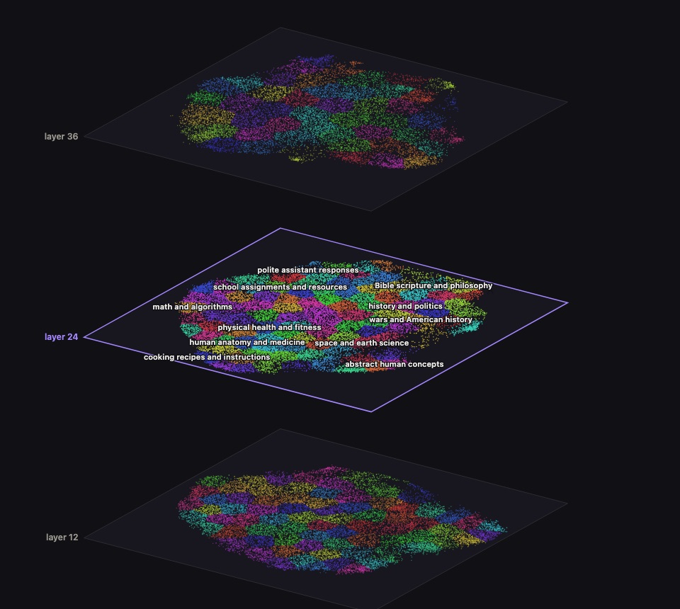

Interpretability research
Sparse autoencoders on three layers of Meta's open weight 30B model: every feature labeled, thousands tested for steering, and the maps to explore them.

A sparse autoencoder on each of layers 12, 24 and 36 of Glimmer's residual stream splits what the model computes into 65,536 features.
Muse Spark 1.3 reads the text each feature fires on and labels every feature that fired at all.
Push a feature's direction into the model while it writes, and Spark judges whether the answer moves to that subject and still makes sense.
| Layer | Features labeled | Steering-tested | Steer cleanly | Steer partly |
|---|---|---|---|---|
| 12 | 61,469 | 17,420 | 692 | 2,683 |
| 24 | 48,977 | 10,622 | 1,110 | 3,367 |
| 36 | 51,860 | 11,978 | 135 | 1,822 |
How well features steer depends on depth: about 4% steer cleanly at layer 12, 10% at layer 24 and 1% at layer 36, where far fewer shift the text without breaking it. Features about weapons, cyberattacks, biological and chemical risk and other dual use topics are left out of these pages.